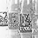
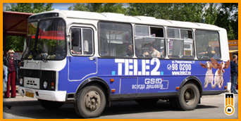
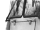

последние работы


Маршрутные такси ПАЗ 3205 – самый многочисленный и востребованный вид городского
транспорта в Н. Новгороде. Маршрутные такси, в отличие от муниципального транспорта в
силу
сравнительно небольших размеров обладают меньшими возможностями по нанесению рекламных
изображений. С другой стороны, именно маршрутные такси представляют наилучшее сочетание
цена / качество при размещении рекламы.
МАРШРУТНОЕ ТАКСИ КАК НОСИТЕЛЬ РЕКЛАМЫ

Низкая цена.
Большое количество машин.
Фиксированные маршруты – такси не могут поставить
на другой маршрут, чтобы заменить сломавшуюся единицу, как это бывает с
муниципальным транспортом.
Долгое время работы на линии – с утра до позднего вечера. Такси,
принадлежащие
частным владельцам работают в 2 смены.
Несколько большее загрязнение поверхности.
Большая скорость передвижения по городу.
МАРШРУТЫ
№ 101
Верхние Печеры – Южное шоссе
Количество т.с. на маршруте - 19 единиц.
Следует:
Верхние Печеры, ул. Родионова, ул. Ванеева, пл. Свободы, ул. Горького, пл. Горького, пл. Лядова, пл. Комсомольская, пр. Ленина, станция метро «Пролетарская», ул. Веденяпина, Южное шоссе.
№ 103
Щербинки 2 – Московский вокзал
Количество т.с. на маршруте - 16 единиц.
Следует:
Щербинки 2, пр. Гагарина, Дворец Спорта, пл. Лядова, пл. Горького, пл. Ленина,
Московский вокзал.
№ 104
Щербинки 2 – пл. Минина
Количество т.с. на маршруте - 15 единиц.
Следует:
Щербинки 2, пр. Гагарина, Дворец Спорта, пл. Лядова, пл. Горького, ул. Горького, пл. Свободы, ул. Варварская, ул. Минина, пл. Минина.
№ 105
Кузнечиха 2 – Московский вокзал
Количество т.с. на маршруте - 12 единиц.
Следует:
Кузнечиха 2, пл. Советская, ул. Бекетова, Дворец Спорта, пр. Гагарина, пл. Лядова, пл. Горького, пл. Ленина, Московский вокзал.
№ 117
Щербинки 2 – Верхние Печеры
Количество т.с. на маршруте - 15 единиц.
Следует:
Щербинки 2, пр. Гагарина, Дворец Спорта, пл. Лядова, ул. Белинского, пл. Сенная, ул. Родионова, Верхние Печеры.
№ 118
Дворец Спорта – Мещерское озеро
Количество т.с. на маршруте - 11 единиц.
Следует:
Дворец Спорта, ул. Бекетова, пл. Советская, ул. Ванеева, пл. Свободы, пл. Минина,
Речной вокзал, пл. Ленина, Мещерское озеро.
№ 119
Щербинки 2 – Красное Сормово
Количество т.с. на маршруте - 33 единиц.
Следует:
Щербинки 2, пр. Гагарина, Дворец Спорта, пл. Лядова, пл. Горького, пл. Ленина, Московский вокзал, Московское шоссе, Сормовское шоссе, ул. Коминтерна, Центр Сормова, Красное Сормово.
№ 133
ул. Сурикова – ЗКПД 4
Количество т.с. на маршруте - 35 единиц.
Следует:
ул. Сурикова, пр. Гагарина, Дворец Спорта, пл. Лядова, пл. Горького, пл. Ленина, Московский вокзал, Московское шоссе, кинотеатр Москва, пр. Героев, ЗКПД 4.
№ 138
Соцгород 2 – Мещерское озеро
Количество т.с. на маршруте - 10 единиц.
Следует:
Соцгород 2, ул. Дьяконова, пр. Бусыгина, станция метро «Пролетарская», пр. Ленина, Московский вокзал, Мещерское озеро.
№ 141А
ЗКПД 4 – Верхние Печеры
Количество т.с. на маршруте - 10 единиц.
Следует:
Верхние Печеры, ул. Ванеева, пл. Свободы, пл. Минина, Речной вокзал, пл. Ленина, Московский вокзал, Московское шоссе, Сормовское шоссе, ул. Коминтерна, Центр Сормова, ЗКПД 4.
№ 145
пл. Сенная – ЗКПД 4
Количество т.с. на маршруте - 30 единиц.
Следует:
пл. Сенная, ул. Родионова, ул. Минина, пл. Минина, Речной вокзал, пл. Ленина, Московский вокзал, Московское шоссе, ЗКПД 4.
№ 147
пл. Горького – пос. Сортировочный
Количество т.с. на маршруте - 15 единиц.
Следует:
пл. Горького, пл. Ленина, Московский вокзал, Московское шоссе, пос. Сортировочный.
№ 152
Кузнечиха 2 – ЗКПД 4
Количество т.с. на маршруте - 20 единиц.
Следует:
Кузнечиха 2, пл. Советская, ул. Бекетова, Дворец Спорта, пр. Гагарина, пл. Лядова, пл. Комсомольская, Комсомольское шоссе, кинотеатр Москва, пр. Героев, ЗКПД 4.
№ 155
Мещерское озеро – пос. Афонино
Количество т.с. на маршруте - 35 единиц.
Следует:
Мещерское озеро, Бульвар Мещерский, пл. Ленина, пл. Горького, ул. Горького, пл. Свободы, пл. Минина, ул. Минина, пл. Сенная, ул. Родионова, пос. Афонино.
№ 156
52 Квартал – Красное Сормово
Количество т.с. на маршруте - 12 единиц.
Следует:
52 Квартал, пр. Ильича, станция метро «Пролетарская», пр. Ленина, пл. Комсомольская, Комсомольское шоссе, кинотеатр Москва, пр. Героев, Центр Сормова, Красное Сормово.
№ 160
ул. Янки Купалы – ул. Усилова
Количество т.с. на маршруте - 32 единицы.
Следует:
ул. Янки Купалы, Южное шоссе, Д.К.ГАЗ, станция метро «Пролетарская», пр. Ленина,
пл. Комсомольская, пл. Лядова, пл. Горького, пл. Минина, ул. Минина, пл. Сенная, ул. Усилова.
№ 163
ул. Дружаева – ул. Усилова
Количество т.с. на маршруте - 24 единицы.
Следует:
ул. Дружаева, пр. Бусыгина, станция метро «Пролетарская», пр. Ленина, пл. Комсомольская, пл. Лядова, пл. Горького, пл. Свободы, ул. Усилова.
№ 166
Щербинки 2 – Мещерское озеро
Количество т.с. на маршруте - 24 единиы.
Следует:
Щербинки 2, пр. Гагарина, Мызинский мост, станция метро «Пролетарская», пр. Ленина, Московский вокзал, Мещерское озеро.
№ 168
ул. Космическая – пл. Свободы
Количество т.с. на маршруте - 21 единица.
Следует:
ул. Космическая, ул. Лескова, ул. Веденяпина, Д.К.ГАЗ, станция метро «Пролетарская», Мызинский мост, пр. Гагарина, Дворец Спорта, пл. Лядова, пл. Горького, пл. Свободы.
№ 170
пл. Сенная – ЗКПД 4
Количество т.с. на маршруте - 24 единицы.
Следует:
ЗКПД 4, пр. Героев, кинотеатр Москва, Московское шоссе, Московский вокзал, пл. Ленина, Речной вокзал, пл. Минина, пл. Сенная.
№ 171
ЗКПД 4 – пл. Свободы
Количество т.с. на маршруте - 20 единицы.
Следует:
ЗКПД 4, Центр Сормова, ул. Коминтерна, ул. Сормовское шоссе, Московское шоссе, Московский вокзал, пл. Ленина, Речной вокзал, пл. Минина, пл. Свободы.
№ 176
Щербинки 2 – пос. Дубравный
Количество т.с. на маршруте - 14 единиц.
Следует:
Щербинки 2, пр. Гагарина, Дворец Спорта, пл. Лядова, пл. Комсомольская, Комсомольское шоссе, кинотеатр Москва, пр. Героев, Центр Сормова, пос. Дубравный.
№ 178
Верхние Печеры – Красное Сормово
Количество т.с. на маршруте - 20 единиц.
Следует:
Верхние Печеры, ул. Родионова, пл. Сенная, ул. Белинского, пл. Лядова, пл. Комсомольская, кинотеатр «Москва», пр. Героев, ул. Культуры, Центр Сормова, Красное Сормово.
№ 181
Кузнечиха 2 – ул. Янки Купалы
Количество т.с. на маршруте - 14 единиц.
Следует:
Кузнечиха 2, пл. Советская, ул. Бекетова, Дворец Спорта, пр. Гагарина, пл. Лядова, пл. Комсомольская, пр. Ленина, станция метро « Пролетарская», Д.К.ГАЗ, Южное шоссе, ул. Янки Купалы.
№ 183
Соцгород 2 – Верхние Печеры
Количество т.с. на маршруте - 27 единиц.
Следует:
Соцгород 2, ул. Дьяконова, пр. Бусыгина, станция метро «Пролетарская», пр. Ленина, пл. Комсомольская, пл. Лядова, ул. Белинского, пл. Сенная, Верхние Печеры.
№ 185
Соцгород 2 – пл. Минина
Количество т.с. на маршруте - 10 единиц.
Следует:
Соцгород 2, ул. Дьяконова, пр. Бусыгина, станция метро «Пролетарская», пр. Ленина, пл. Комсомольская, пл. Лядова, пл. Горького, пл. Свободы, пл. Минина.
№ 197
Мостотряд – пл. Свободы
Количество т.с. на маршруте - 20 единиц.
Следует:
Мостотряд, Южное шоссе, ул. Веденяпина, Д.К.ГАЗ, станция метро «Пролетарская», Мызинский мост, пр. Гагарина, Дворец Спорта, пл. Лядова, пл. Горького, пл. Свободы